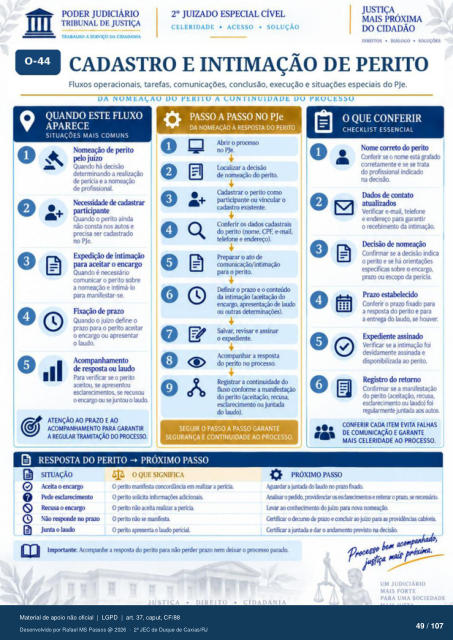

Transcrição automática em português, ainda não revisada. Confira grafia, prazos e termos jurídicos na imagem e no PDF antes de utilizar.
TRABALHO A SERVtço DA CIDADANIA
CELERIDADE • ACESSO • SOLUÇÃO
DIREITOS • DIÁLOGO •
CADASTRO E INTIMAÇÃO DE PERITO
Fluxos operacionais. tarefas, comunicações. conclusão, execução e situações especiais do PJe.
DA NOMEAÇAO DO A CONIINUIDADE DO PROCESSO
QUANDO ESTE FLUXO
APARECE
SITUAÇÕES MAIS COMUNS
Nomeação de Frito Quando há chsão
determinando a realização de IMicia e a
Quando o vprito ainda não consta nos aut(X e
precisa ser cadastrado no PJe.
Exl"ão intimaçü) para aceitar o encargo
Quando é comunicar 0 prito sobre
a e intirná-b para manifestar-se.
Quando o juízo define o prazo para o ;ñto aceitar
0 encargo ou o laudo.
de respsta ou laudo Para 'verificu se o IMIto
aceitou, se apresentou esclarecimentos. se recusw
0 0 lat_xh
ATENÇÃO AO PRAZO E AO
ACOMPANHAMENTO PARA GARANTIR
A REGULAR TRAMITAÇÃO PR(XESSQ
o
PASSO A PASSO NO PJe
DA NOMEAÇÃO À RESPOSTA DO PERITO
no Uxalizar a decisão
de rxmeação do IMito. Cadastrar o Frito como
participante vincular 0 cadastro existente.
Conferir os cadastrais do IMit0 (nome, CPF. e-mail.
e endereço). Preparar 0 ato de
comunicaçào/lntimaçào [kfinir o prazo e o cmteúdo
da intinvwào (aceitíü) do encarg), apresent*) lao
c*Jtras Salvar, revisar e assinar
0 Acmpanhar a respsta
do IMit0 no a cmtinuidade
fluxo confonne a do Frito (aceitação, r«usa
esclarecimento ou juntada do laudo).
SEGUIR O PASSO A PASSO GARANTE
SEGURANÇA E CONTINUIDADE AO PROCESSO.
O QUE CONFERIR
CHECKLIST ESSENCIAL
Nome correto do Frito Conferir 0 esta grafach
corretarnente e se trata do profissional indicado
na Dados de
Verificar e-mail. telefone e para garantir
o recebimento da Intimaçàcx de nomeação
Confirmar se a chsào indica o IHito e se há
eslEificas sobre o encargo. ;xazo ou esco;n da \Hicia
Prazo Conferir o prazo fixado para
a resg»sta do prito e para a entrega do laudo. se houver.
ExFdiente assinado Verificar se a foi
devidamente assinuia e dispnibllizada K) rMit0.
Registro do retorno Confirmar se a manifestação
do çvito recusa. esclarecimento ou laudo) fci
regularrTH1te juntaia aut(S
CONFERIR CADA ITEM EVITA FALHAS
DE COMUNICAÇÃO E GARANTE
MAIS CELERIDADE AO PROCESSO.
RESPOSTA DO PERITO PRÓXIMO PASSO
SITUAÇÃO
Aceita o encargo o errarp
Junta o laucb
OQUE SIGNIFICA
O Irrito mani#sta concordàrria em realizar a xrtia O Frito
O Frito realizar a O Frito
O Frito o laó Fri•iaL
PRÓXIMO PASSO
Agwdz a j."txia ftxxh tevar ruwa
Cet&ar o e Cert&z a juntada e dar o aruiamento misto ru
Imprtante: a respsta do perito para não Frder Vazo nem deixar o pam).
UM JUDICIÁRIO
MAIS FORTE
PARA UMA SOCIEDADE
49 107
Ver também o infográfico original (página 49)
